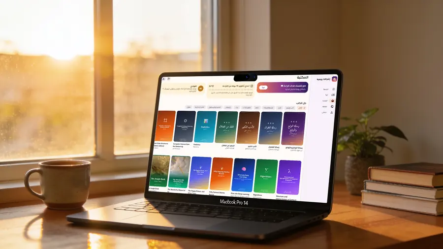
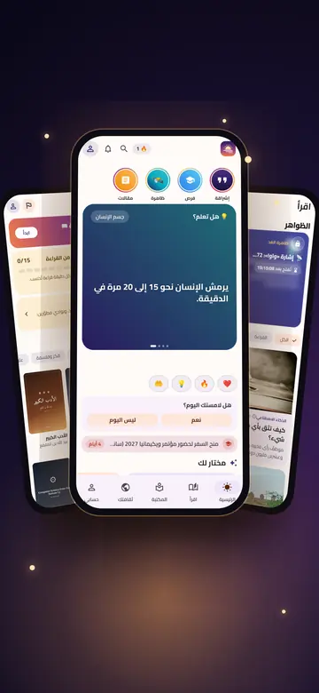
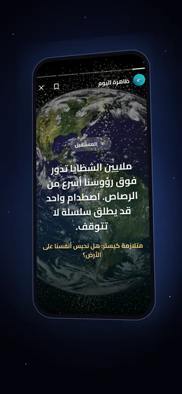
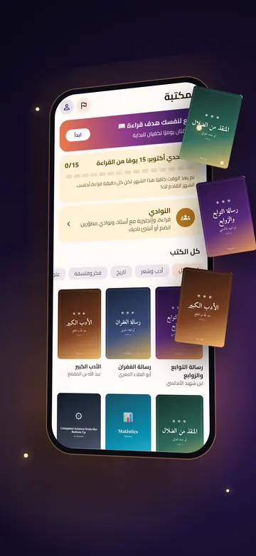
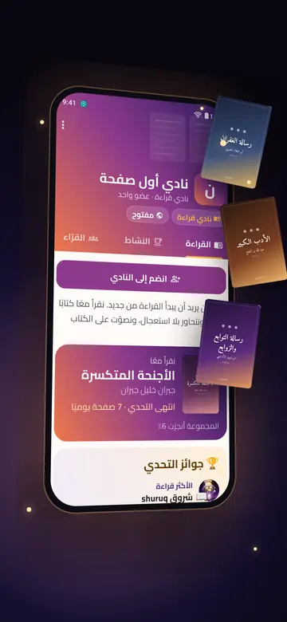
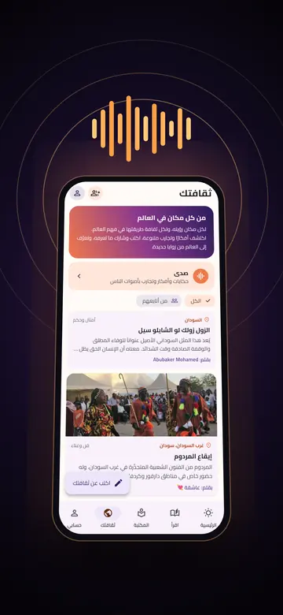
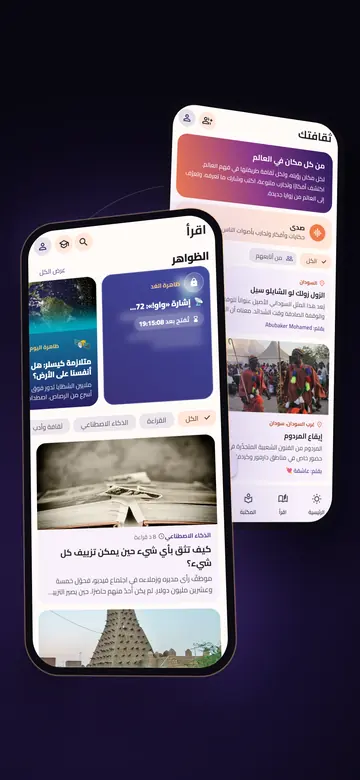
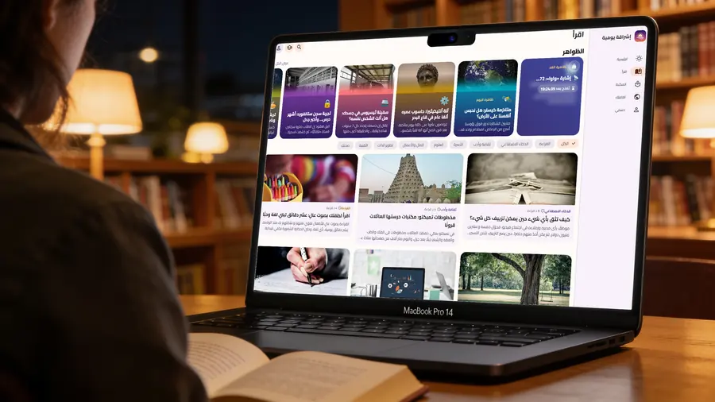
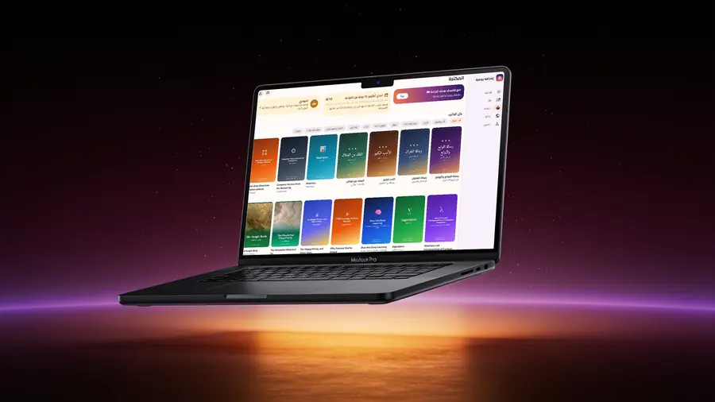

«أعزُّ مكانٍ في الدُّنى سرجُ سابحٍ، وخيرُ جليسٍ في الزمان كتابُ.»
— المتنبي«أفضل طريقة للتنبؤ بالمستقبل هي أن تخترعه.»
— آلان كاي«إذا كنتُ قد رأيت أبعد، فذلك لأنني وقفت على أكتاف العمالقة.»
— إسحاق نيوتن«الكلام رخيص، أرني الكود.»
— لينوس تورفالدس«بالأمس كنت ذكيًا فأردت أن أغيّر العالم، واليوم أنا حكيم لذلك أغيّر نفسي.»
— يُنسب إلى جلال الدين الرومي«هذا للجميع.»
— تيم بيرنرز-لي، مخترع الويب«من يعرف الآخرين ذكي، ومن يعرف نفسه حكيم.»
— لاو تزو«الفي البرّ عوّام.»
— مثل سوداني
اقرأ
مكتبة من روائع الكتب، ومقال قصير كل يوم، وحكمة تعرف معناها وقصتها.
تحاور
نوادٍ تقرأ الكتاب نفسه، وتتحاور فيه دون أن تحرق متعته، وتختار معًا ما تقرؤه بعده.
اصنع
فرق صغيرة من المطوّرين، وموجّه خبير، ومشروع مفتوح المصدر يراه العالم.
احفظ
أمثال بأصوات أهلها، وحكايات المدن وعاداتها تُكتب بأسماء أصحابها.






كيف تكبر فكرة؟

«لا نريد أن نضيف مزيدًا من المعرفة إلى عالمٍ ممتلئٍ بها، بل نريد أن نساعد الإنسان على أن يعرف كيف يديرها، ويشاركها، وينتجها، ويحوّلها إلى أثر.»
